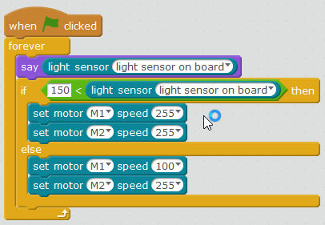

Robot polilla
Reto
Ya sabemos que las polillas van a la luz: Realizar un programa que si hay luz entonces que vaya recto, si no hay luz que de vueltas
Solución
Se ha optado por dar un poco de potencia a la otra rueda cuando no hay luz, para que de la vuelta un poco más abierta
